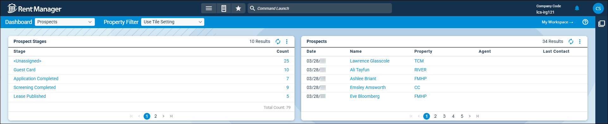

Source: https://rmxhelp.rentmanager.com/Topics/Express/KB/LP-DT-Prospects.htm
Prospect Dashboard Tiles
Rent Manager includes several dashboard tiles that provide at-a-glance data and analysis to help you track of prospect information. With these dashboard tiles, you can view prospect's income verification, application, and stage information.

Add the following prospect-related tiles to your dashboard to help track potential tenants:
| Dashboard Tile | Description |
|---|---|
|
Income Verifications |
The prospect's name, the property their income is being verified for, and their current stage of the AmRent income verification process display. This tile helps you track the current status of income verification requests (Canceled, Complete, Error, Invitation Error, Submitted). |
|
Prospect Stages |
The name of the prospect stage and the number of prospects in that stage display. This tile helps you track prospects that have been created in Rent Manager as they progress through prospect stages. |
|
Prospects |
The prospect's name, date they were created in Rent Manager, leasing agent, last contact, and default property display. This tile helps you track prospects that have been created in Rent Manager through multiple sources. |
|
Recent Online Applications |
The name of the primary applicant, the property and unit name associated with the application, whether an AmRent screening is complete on all applicants, and the date the prospect's application was started (for unfinished applications) or was submitted (for completed applications) display. This tile helps track rental applications submitted by prospects through Apply Now. |